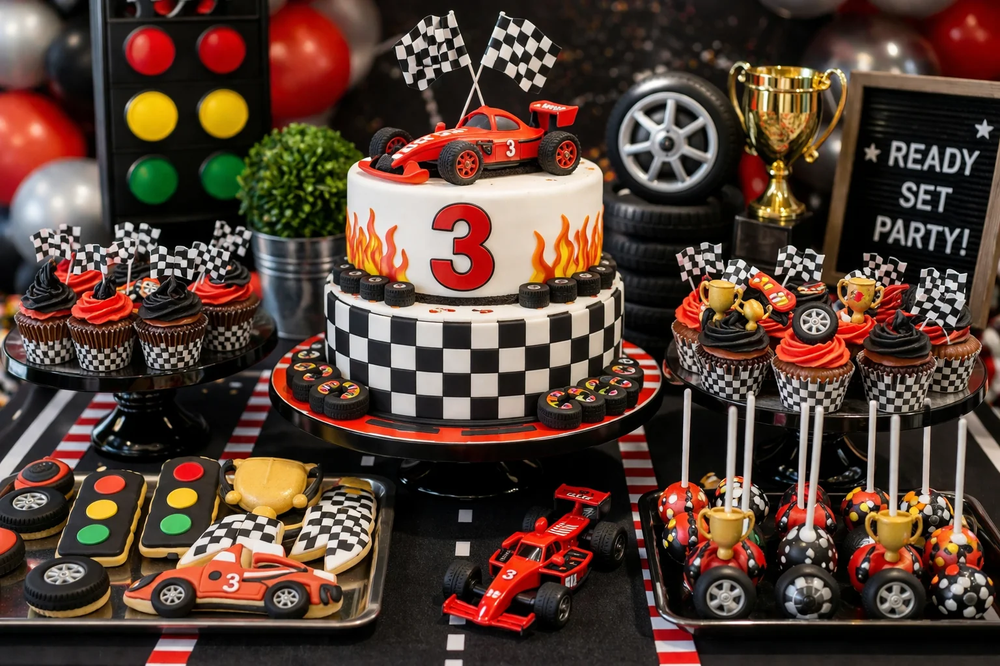
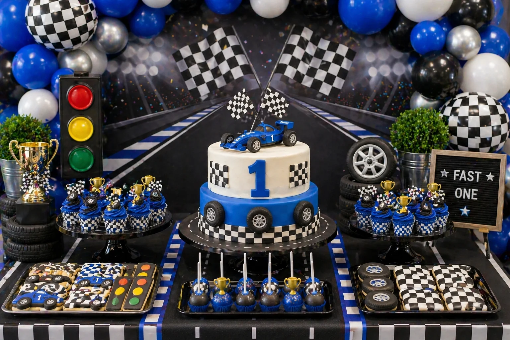

A race car party is a bold, exciting and high-energy theme for a children's birthday celebration. With checkerboard balloon accents, a racing car cake, tyre cupcakes, traffic light cookies, trophy cake pops and red, black and silver styling, the dessert table can become the main feature of the party.
At Little Moment Studio, our focus is balloon styling and celebration setups. We do not make cakes or cupcakes ourselves, but we know how important the dessert table is to the overall party look. This guide covers race car party inspiration — colour palettes, balloon ideas, three styling approaches and sweet treat ideas that work beautifully together.
If you would like cupcakes or a cake to complement your balloon display, we are happy to recommend a trusted local cake maker.
Why Race Car Parties Are So Popular
Race car parties work brilliantly for children who love cars, speed, tracks and trophies. The theme is immediately recognisable from the checkerboard detail alone, which means even a simple garland of red, black and white balloons instantly reads as racing. It also scales beautifully — from a bold toddler party to a polished Fast One first birthday display.
| Element | Race Car Party Inspiration |
|---|---|
| Balloon garland | Red, black, white, silver, blue or checkerboard accents |
| Cake | Race car cake, racetrack cake, trophy cake or Fast One cake |
| Cupcakes | Checkerboard cupcakes, tyre cupcakes or racing flag cupcakes |
| Cookies | Cars, tyres, traffic lights, trophies, helmets and racing flags |
| Cake pops | Trophy pops, tyre pops or racing colour cake pops |
| Backdrop | Racetrack, checkerboard flags, podium or pit stop styling |
| Props | Mini race cars, trophies, tyres, road signs and racing flags |
| Table styling | Black cake stands, racing stripes, metallic accents and chequered runner |
The best race car tables feel energetic and bold without becoming too cluttered. Checkerboard details are most effective when used as accents — in two or three balloons, a table runner or a cake band — rather than covering every surface.
Race Car Party Colour Palettes
Start with the colour palette before choosing the balloons, cake or sweet treats. One main colour — red or blue — supported by black, white and silver creates the strongest race car display.
Classic Race Car
Red, black, white and silver. Bold, fast and immediately recognisable.
Blue Racing
Racing blue, white, silver and black. Clean, modern and popular for first birthdays.
Trophy Podium
Black, white, gold and silver. Celebratory and refined for a winner's table.
Fast One
Blue, white, black and silver. The go-to palette for a first birthday race car party.
Idea 1: Classic Red, Black & White Race Car Table
A classic red, black and white race car table is the most recognisable version of the theme. The checkerboard detail — in two or three balloon accents and a cake band or table runner — ties the whole display together immediately. This is the version that children point to from across the room, and it works for all ages from toddlers through to older children's parties.
| Element | Classic Race Car Table Idea |
|---|---|
| Balloon garland | Red as the dominant colour, with black, white and silver accents and checkerboard balloons |
| Backdrop | Racetrack panel, checkerboard flag backdrop or pit stop styling |
| Cake | Racing car cake with checkerboard band and number detail |
| Cupcakes | Racing flag cupcakes and tyre cupcakes on a black cake stand |
| Cookies | Traffic lights, tyres, trophies and racing flag cookies |
| Cake pops | Trophy cake pops and red racing pops grouped near the cake |
| Props | Mini race cars, a small trophy and a chequered table runner |
| Sweet jars | Red, black and white sweets in small jars on either side of the stand |
Black cake stands are one of the simplest ways to reinforce the racing theme — the dark contrast against the yellow or red cake and soft balloon backdrop creates a bold, intentional display quality that elevates the whole table.
Balloon tip
For a race car garland, use red as the main base colour — around half the balloons — with black and white as supporting tones. Silver metallic balloons woven through give the garland a premium, polished quality that plain latex cannot achieve. Add two or three checkerboard balloons as accents rather than the dominant balloon: they create the racing identity without making the garland feel too busy. Space them out so each checkerboard balloon has solid colour on either side.
Idea 2: Race Car Cake & Cupcake Display

Race car cake and cupcake display styled by Little Moment Studio, Sittingbourne — racing car cake, checkerboard cupcakes, tyre cookies and trophy cake pops
A race car cake and cupcake display puts the birthday cake at the heart of the table. A racing car cake with a checkerboard band, number detail and red and black colouring becomes an unmistakable centrepiece, with checkerboard and tyre cupcakes grouped around it to reinforce the racing palette. Traffic light and trophy cookies at the base of the stand complete the pit lane feel without requiring any extra props.
| Element | Cake Display Idea |
|---|---|
| Cake | Racing car cake with checkerboard band, number and flag detail |
| Cupcakes | Checkerboard cupcakes and tyre cupcakes mixed on a tiered stand |
| Cookies | Traffic light and tyre cookies at the base of the cake stand |
| Cake pops | Trophy pops or red and black racing pops on a small display |
| Cake stand | Black or dark metal tiered stand for contrast |
| Balloon garland | Red, black, white and silver garland with checkerboard accents above |
| Props | Mini race car beside the stand and small racing flags |
Good cupcake styles for a race car display:
| Cupcake Style | Best For |
|---|---|
| Checkerboard cupcakes | Classic racing look — black and white pattern on smooth buttercream |
| Racing flag cupcakes | Small fondant or wafer flag pressed into a swirled top |
| Tyre cupcakes | Dark chocolate or grey buttercream piped in a tread pattern |
| Trophy topper cupcakes | Small fondant or sugar trophy on a smooth dome |
| Red swirl cupcakes | Simple filler cupcakes that repeat the main palette |
| Mini car topper cupcakes | Small toy car pressed into yellow or red buttercream |
For more cupcake ideas, see our birthday cupcake ideas guide.
Idea 3: Blue Racing First Birthday Table

Blue race car first birthday table — blue, black, white and silver with racing car cake, checkerboard cupcakes and trophy cake pops
A blue race car table is a brilliant option for a first birthday or a more modern, sophisticated racing setup. Racing blue, white, silver and black keeps all the energy and character of the theme while feeling slightly cleaner and more polished than classic red and black. The Fast One concept — where the party theme connects to the child turning one — works especially well with this palette.
| Element | Blue Racing First Birthday Idea |
|---|---|
| Balloon garland | Racing blue dominant with white, silver and black, plus checkerboard accents |
| Cake | Blue race car cake with number one topper and checkerboard detail |
| Cupcakes | Checkerboard cupcakes and blue swirl cupcakes on a black stand |
| Cookies | Tyre and trophy cookies in blue, black and white icing |
| Cake pops | Trophy cake pops and silver racing pops |
| Table runner | Chequered runner on a dark or neutral table |
| Props | Mini blue race car, small trophy and silver balloons |
Styling tip
For a Fast One first birthday, the number one balloon is the focal point — position it slightly off-centre above the cake stand rather than directly in the middle of the garland. A chrome silver number balloon in racing style sits beautifully against a blue, white and black garland. Keep the rest of the display restrained: a clean cake, twelve matching cupcakes, tyre cookies and two or three trophy cake pops are all that is needed for a polished, photo-ready result.
Idea 4: Fast One First Birthday Table
Fast One is one of the most searched race car party concepts for first birthdays. The wording connects the theme to the age in a simple, memorable way, and it works in both the classic red and the blue racing palette. A race car cake with a number one topper, checkerboard cupcakes, tyre cookies and a garland of racing colours create a table that feels genuinely themed rather than just decorated. For more first birthday inspiration, see our first birthday balloon ideas guide.
Idea 5: Trophy & Podium Table
A trophy and podium table gives the race car theme a winner's celebration feel. Black, white, gold and silver create a more sophisticated palette — the gold trophy details, podium-style cake stands at different heights and silver balloon accents make the table feel like a race finish celebration rather than a simple car-themed party. This works especially well for older children's parties or when you want a display that leans more grown-up and polished.
What to Include on a Race Car Dessert Table
A race car dessert table can be as simple or as full as the party requires. Start with the cake and cupcakes, then add cookies, cake pops and sweet jars. Mini race car props and a chequered table runner do most of the heavy visual work without requiring a large prop budget.
| Treat | Race Car Party Idea |
|---|---|
| Birthday cake | Race car cake, racetrack cake, trophy cake or Fast One cake |
| Cupcakes | Racing flags, checkerboard, tyre, trophy or colour-matched swirls |
| Cookies | Cars, tyres, traffic lights, trophies, helmets and racing flags |
| Cake pops | Trophy pops, tyre pops or racing colour pops |
| Brownies | Track-style brownie pieces on a black tray |
| Sweet jars | Red, black, white, silver or blue sweets in small jars |
| Popcorn cups | Pit stop snack cups in racing colours |
| Mini desserts | Small pots with racing flag or trophy toppers |
For practical advice on arranging the table layout, see our guide to how to style a dessert table for a children's party. For help coordinating the sweet treats with your balloon palette, see our guide on how to match cupcakes with your balloon display.
Race Car Party Cupcake Ideas
Cupcakes work particularly well for race car parties because the individual details — a checkerboard pattern, a small flag, a fondant tyre — communicate the theme immediately without needing an elaborate cake. Mixing two or three styles on the same tiered stand keeps the display varied and interesting.
| Cupcake Style | Best For |
|---|---|
| Racing flag cupcakes | Classic racing look — fondant or wafer paper flag in a swirl |
| Checkerboard cupcakes | Strong visual theme — black and white pattern on smooth buttercream |
| Tyre cupcakes | Dark chocolate or grey buttercream with a tread-style piped finish |
| Trophy topper cupcakes | Winner's podium feel — gold or silver fondant trophy on a dome |
| Traffic light cupcakes | Green, amber and red dots piped on a smooth dark top |
| Red swirl cupcakes | Easy classic race car filler — tall swirl in racing red |
| Blue swirl cupcakes | Blue racing palette filler for Fast One tables |
| Mini car topper cupcakes | Small toy car pressed into smooth buttercream |
Useful piping tips for race car cupcakes:
| Effect | Tip |
|---|---|
| Tall swirl | Wilton 1M open star |
| Rosette swirl | Wilton 2D closed star |
| Smooth dome for toppers | Wilton 1A large round |
| Small dots and details | Wilton 3, 4 or 12 round tip |
| Tread texture | Wilton 233 grass tip pressed lightly into dark buttercream |
For a fuller guide to piping tips and techniques, see our best piping tips for cupcakes guide.
Race Car Party Balloon Ideas
The balloon display creates most of the visual impact. For a race car party, one strong main colour — red or blue — supported by black, white and silver creates a far more premium result than trying to use all the racing colours equally.
| Theme | Balloon Colours |
|---|---|
| Classic racing | Red dominant, with black, white and silver — checkerboard accents |
| Blue racing | Racing blue, white, silver and black — checkerboard accents |
| Fast One first birthday | Blue or red, with black, white, silver and number balloon focal point |
| Trophy podium | Black, white, gold and silver — no red or blue |
| Checkerboard racing | Black and white dominant with one solid accent colour |
| Bright racing | Red, yellow, black and white — more playful children's version |
For balloon packages and availability across Sittingbourne and Kent, see our birthday balloon styling page and balloon garlands page.
Matching Balloons, Cake & Cupcakes
The sweet treats do not need to match the balloons exactly — they just need to feel like part of the same colour story. Checkerboard details on both the cake and the balloon garland create a strong visual link even when the individual colours vary slightly.
| Balloon Palette | Cake & Cupcake Idea |
|---|---|
| Red, black, white | Red race car cake, checkerboard cupcakes, tyre cookies |
| Blue, white, silver | Blue race car cake, blue cupcakes, trophy cake pops |
| Black, white, gold | Trophy cake, podium-style cupcakes, gold cake pops |
| Red, yellow, black | Traffic light cookies, red cupcakes, bright race car cake |
| Black, silver, white | Modern racing cake, tyre cookies, metallic cupcakes |
For more advice on coordinating your colour palette, see our guide to how to choose a colour palette for your balloon display.
Your Questions Answered
What colours work best for a race car party?
Red, black, white and silver are the classic race car palette and make the theme instantly recognisable. Red should be the dominant colour in the display, with black and white as supporting tones and silver metallic details for a premium finish. For a first birthday or more modern version, racing blue, white, silver and black create a cleaner look. For a trophy or podium table, black, white, gold and silver feel celebratory and refined. Pick three to five colours and repeat them consistently across every element.
What balloons should I use for a race car party?
A red, black, white and silver garland with two or three checkerboard balloon accents is the most effective race car balloon combination. Red should make up around half the balloons, with black and white as supporting tones and silver metallic balloons woven through. For a blue racing or Fast One first birthday display, racing blue, white and silver with black accents creates a polished result. Checkerboard balloons work best as accents — two or three in a full garland — rather than as the main balloon.
What cupcakes work well for a race car party?
Racing flag cupcakes and checkerboard cupcakes are the most popular race car choices because they communicate the theme at a glance. Racing flag cupcakes use a small fondant or wafer flag pressed into a red or black buttercream swirl. Checkerboard cupcakes use black and white buttercream in an alternating pattern or cut fondant squares on a smooth dome. Tyre cupcakes in dark chocolate or grey buttercream are an easy option with strong visual impact. See our best piping tips guide for technique detail.
What should I include on a race car party dessert table?
A strong race car party dessert table includes a racing car or racetrack birthday cake as the centrepiece, twelve to twenty-four themed cupcakes, traffic light and tyre cookies, trophy cake pops, colour-matched sweet jars and mini race car props. Checkerboard balloon accents in the garland above the table immediately communicate the racing theme. Black cake stands, silver trays and a chequered table runner reinforce the display without cluttering it.
Can a race car party work for a first birthday?
Yes — a race car theme is one of the most popular first birthday choices, particularly through the Fast One concept. For a Fast One table, use blue, white, black and silver as the main palette and make the number one balloon a focal point above the cake stand. A race car cake with a number one topper, checkerboard cupcakes, tyre cookies and trophy cake pops create a polished, photo-ready display. See our first birthday balloon ideas guide for more inspiration.
Whether you choose the bold classic red, black and white approach, a clean blue racing display for a first birthday, or a trophy and podium table for a winner's celebration feel, the key is consistency. When the balloons, cake, cupcakes, cookies and props all share the same racing colour language — and the checkerboard detail appears in at least two or three places — the table reads as one coordinated, intentional display.
For more children's party inspiration, see our guides to construction party balloon and dessert table ideas and how to style a dessert table for a children's party.
Planning a Race Car Party in Sittingbourne or Kent?
Little Moment Studio creates beautiful balloon displays and celebration setups for children's birthdays across Sittingbourne and Kent. We can also recommend a trusted local cake maker to complete your race car party dessert table.